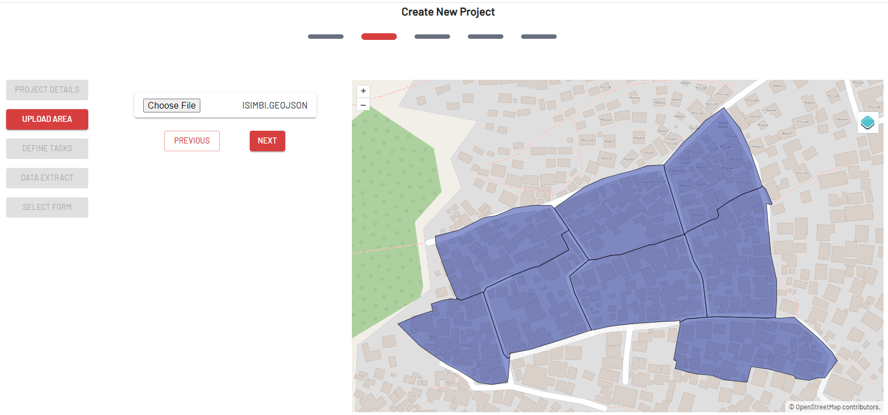

2.8 Setting Up Field Mapping Tasking Manager
Course Objectives
This section will provide you general information about Field Maping Tasking Manager, by the end of this section you should be able to:
- Understand what is Field Mapping Tasking Manager
- Able to setup Field Mapping Tasking Manager project
Learning Activities
FMTM Overview
Field Mapping Tasking Manager (FMTM) is a platform that helps project managers to organize and manage mapping tasks. It assigns those tasks to volunteers and tracks their progress. The tool includes features for collaborative editing, data validation, and error detection. This ensures that the data collected by volunteers is accurate and reliable.
FMTM works much like a tasking manager (TM), a platform that works to manage and coordinate remote mapping project. FMTM and TM divide area of interest into smaller tasks/grids that can be completed rapidly with many people working at the same time.

FMTM is designed to be used in conjunction with Open Data Kit (ODK). ODK is a free and open-source set of tools that allows users to create, collect, and manage data with mobile devices. The ODK provides a set of open-source tools that allow users to build forms, collect data in the field, and aggregate data on a central server. It is commonly used for data collection in research, monitoring and evaluation, and other development projects.
Project managers use FMTM to manage tasks and assign them to volunteers. The data collected by the volunteer via ODK is typically uploaded to OpenStreetMap (OSM) where it is used to create more detailed and accurate maps of the affected area. OSM is a free and open-source map of the world that is created and maintained by volunteers.

Overall, the FMTM tool is an important component of HOT’s efforts to support disaster response and humanitarian efforts around the world. By coordinating mapping activities and ensuring the accuracy and reliability of the data collected by volunteers, FMTM helps to provide critical information that can be used to support decision-making and improve the effectiveness of humanitarian efforts.
Skills and technology needed
- Stable Internet connection
- Knowledge of field mapping especially related to building XLSForm for ODK. Please read this Creating XLSForm for ODK to learn more.
- Account on ODK Central Server. Here are the instructions for setting up an ODK Central server on Digital Ocean (it’s very similar on AWS or whatever)
| Tips: |
|---|
| FMTM uses ODK Central server as their back-end. It is important for you to build ODK Central first or have access to ODK Central server, especially in the following information:ODK Central URLODK Central EmailODK Central Password |
Creating Field Mapping Project for FMTM
Note: this guide assumes that you already have access to ODK Central
- Go to fmtm.hotosm.org
- Click on Sign-up to create a new account with your email address. If you already have an account, click Sign-in

-
Click on Create New Project
-
In the project detail tab, enter all required information.
Note: you can put your own ODK Central, Username, and Password in this section

- Click Next after you filled out all the information
- In the Upload Area tab, you will need to upload your area of interest in .geojson format. If you want to create a geojson, you can use https://geojson.io/.

- Click Next after you uploaded the AoI.
- In the Define Tasks, you will need to choose how FMTM split your AOI (whether Divide on Square, Choose Area as Tasks, or Task Splitting Algorithm). Click Next after you are good with the tasks size.

- In the Data Extract tab, you need to select your form category, as well as the Data Extract. FMTM will try to extract OSM data to be used in ODK.
- If you choose Data Extract Ways, you will use the FMTM data extract feature. You need to choose whether you want to extract OSM data as a centroid or as a polygon.

- Click Next after you define the data extract type.
- In the Select Form tab, you need to upload your XLSForm. Upload your XLSForm as .xls/ .xlsx/ .xml

- Click Submit to start uploading your form and create the project. There will be a notification from FMTM if your project is already finished.

[Quiz] Check Your Knowledge
-
HOT developed Tasking Manager to support remote mapping activities, while the Field Mapping Tasking Manager is focused on supporting the field mapping activities. Both platforms work by splitting the AoI into smaller tasks/grids.
a. True
b. False
-
To set up a field mapping tasking manager project, you need to provide a geojson AoI file and XLSForm.
a. True
b. False
Answer: 1.A | 2. A
Activity Checklist
Field Mapping Tasking Manager (FMTM) is a new platform that currently develops by HOT to support field mapping activities. At the end of this section, you should be able to:
- Understand the concept of FMTM
- Learn how to create a project in FMTM